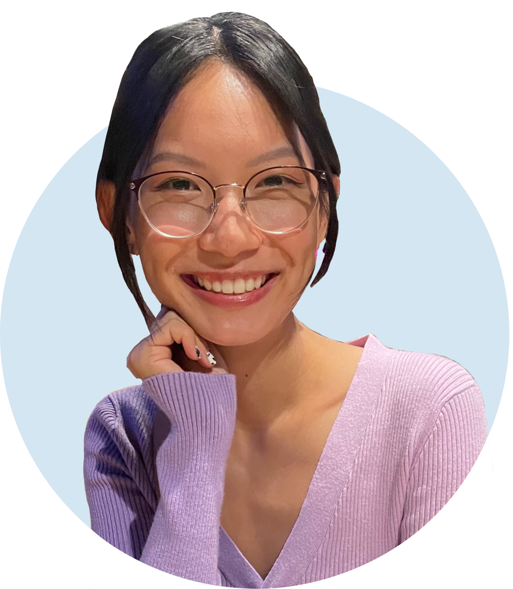

I’m Kassidy, a UX/UI designer based in Orange County, CA. I recently graduated from the UCI UX/UI Design Boot Camp program. Before entering the design field, I graduated from UCLA with a Biology, B.S., with a pre-med focus. I am now transitioning from a career in health sciences to a career in tech and design.
With my former educational experience, I gained valuable skills in research, psychology, creative problem-solving, and building empathy. With a scientist’s natural curiosity to learn new things, I pride myself on being a quick and open-minded learner. I am meticulous with even the smallest details and approach design with the intent to continuously learn and improve. I am interested in producing accessible designs to improve web accessibility for all.
University of California, Irvine
UX/UI Design Boot Camp
June 2023
University of California, Los Angeles
Biology, B.S.
June 2021

I love visiting museums to learn more about art, history, and science!

She’s a girl’s best friend. We love obedience training and park outings!

I’m a major foodie with a major sweet tooth. I love to explore new cuisines and food spots with friends!